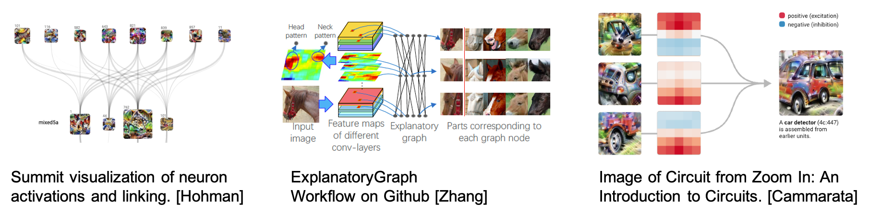
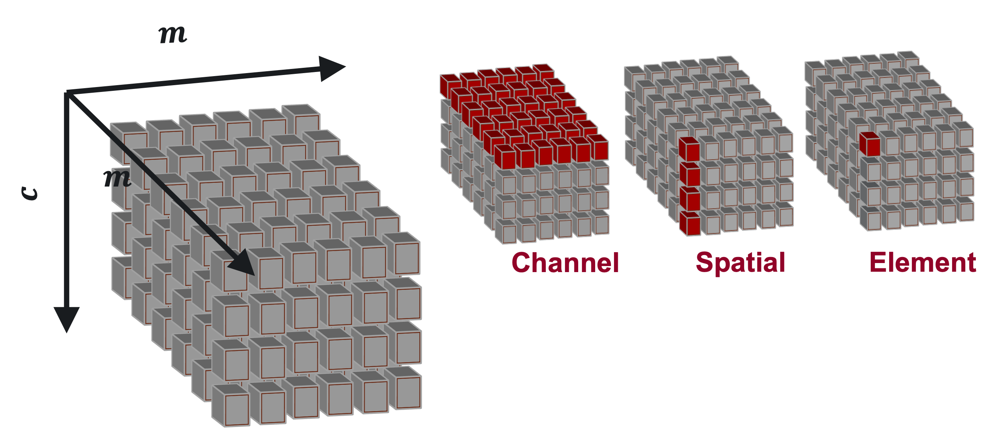
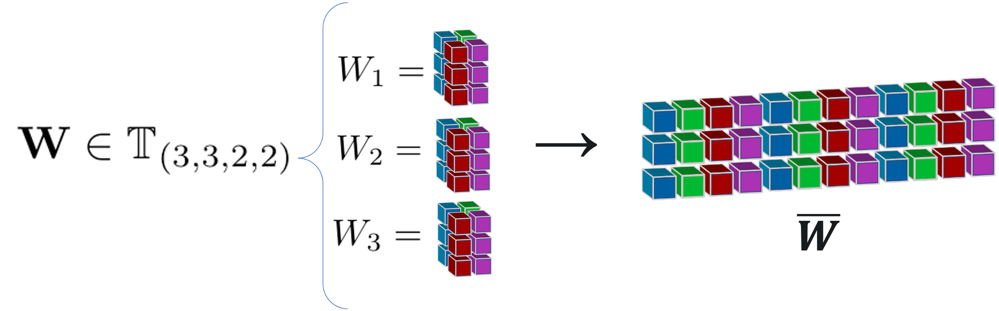

{kind=link}
Overview
Introduction
Deep neural networks (DNN) provide powerful and succesful classification tools. Unfortunately they are often very complex and can involve millions of trained parameters. This complexity makes it difficult to connect the input domain to the decisions used to classify its elements. Does the network really see a bird or does it just see blue sky and infer there is a bird? The DeepDataProfiler (DDP) challenge is to link hidden representations of existing trained neural networks to human recognizable input features and to identify training invariant structures and metrics for determining trustworthiness of the network.
DDP is both a methodology and software package. The methodology has two steps.
Profiling: Generate representations of data using the graph (or subnetwork) of neurons and synapses they most activate in a trained DNN.
Analysis: Apply Graph Theory and Topological Data Analysis (TDA) to identify structural features of the graphs that may be used to explain and interpret the decision process of the network.
The DDP software is the implemention of this methodology in Python using the PyTorch library. Our first release in May 2020 profiled VGG-like Sequential CNN architectures. The current release extends to ResNet architectures. At present only models built using PyTorch can be profiled. Our TDA work is implemented in the homology module in the algorithms directory and depends on ripser.
Related Work
Providing human interpretable explanations for the decisions made by deep neural networks is a high priority for machine learning practioners. One popular approach is to link input data to the most influential neurons and synapses used for their classification. Our research in this area was inspired by Yuxian Qiu, Jingwen Leng, Cong Guo, Quan Chen, Chao Li,Minyi Guo, and Yuhao Zhu. Adversarial Defense Through Net-work Profiling Based Path Extraction. In2019 IEEE/CVF Con-ference on Computer Vision and Pattern Recognition (CVPR), pages 4772–4781, Long Beach, CA, USA, June 2019. IEEE They create graph-like objects called effective paths to explore the internal organization of deep neural networks.
Deep neural networks lend themselves naturally to decomposition into graphs as they are already graph like in their neural connections. Such decompositions have been explored in particular in image classification networks. Summit creates an attribution graph of the convolutional layers to visualize neuron activations and linking, see F. Hohman, et al., “Summit: Scaling Deep Learning Interpretability by Visualizing Activation and Attribution Summarizations,” arXiv:1708.01785 [cs], Nov. 2017
Q. Zhang et al. create explanatory graphs to expose the knowledge hierarchy hidden inside a pre-trained CNN, see: Q. Zhang, R. Cao, F. Shi, Y. N. Wu, and S.-C. Zhu, “Interpreting CNN Knowledge via an Explanatory Graph,” arXiv:1708.01785 [cs], Nov. 2017.
N. Cammarata, et al. describe circuits of neurons from the convolutional layers of a network, which connect to represent features of an image used for classification, see N. Cammarata, S. Carter, G. Goh, C. Olah, M. Petrov, and L. Schubert, “Thread: Circuits,” Distill, vol. 5, no. 3, p. e24, Mar. 2020, doi: 10.23915/distill.00024.
The DeepDataProfiler library builds on the ideas above to provide tools for the analysis of the internal decision structure of a deep neural network. Given a trained model, DDP generates profile graphs for inputs. These graphs are similar to the effective paths in Qiu’s paper but with weighting and attribution similar to the graphs generated in Summit . At present the library has a working pipeline to generate profiles using VGG and ResNet architectures implemented in PyTorch.

We apply Graph Theory and Topological Data Analysis to the profile graphs to explore their structure. The Algorithms directory contains modules for exploring the persistent homology of point clouds generated from profile graphs and for exploring the empirical spectral decomposition of the model’s linear operators.
Jupyter notebooks for the library with illustrative examples are available in the tutorials directory.
Profiling Methods
The goal of DeepDataProfiler is to analyze activations to identify neurons that are key to the classification of an input, but there are many ways to define a neuron and measure its importance. DDP supports analysis on four different types of neurons: Element neurons, Channel neurons, Spatial neurons, and SVD neurons.
Convolutional layers of a CNN produce 3-dimensional tensors of activations, and we can slice that tensor into neuron units in a few different ways.
In a \(c\times m\times m\) activation tensor, there are:
\(c\) channels, which are the \(m\times m\) matrices, or planes of the tensor,
\(m^2\) spatials, which are the \(c\)-vectors through all channels of the tensor at a fixed spatial (row and column) position,
and \(cm^2\) elements, which are the individual cells of the tensor at a fixed channel and spatial position.
See the documentation for ddp.ElementProfiler, ddp.ChannelProfiler, and
ddp.SpatialProfiler for more information on how each of these profiling methods, and
visit Tutorial 1 for an interactive overview.
SVD Profiles
Each convolutional layer has a learned weight tensor \(\text W\) with dimensions \(d\times c\times k\times k\). We can unfold that tensor into a \(d\times ck^2\) matrix \(\overline W\), and take its singular value decomposition (SVD) to find a basis of singular directions.
These SVD directions expose the core dynamics of the linear transformation that occurs when an
input tensor is convolved with the weight tensor for this layer. We can identify
the most important singular directions, or SVD neurons, by projecting the raw
activations onto the SVD basis and measuring their signals, or strength in the
direction of each singular direction. See the documentation for ddp.SVDProfiler
for more information.
Standard Activation Basis |
SVD Basis |
|---|---|
ddp.ElementProfilerddp.ChannelProfilerddp.SpatialProfiler |
ddp.SVDProfiler |
Deep Data Profiler builds a profile of a model-data pairing by identifying key neurons and the synapses that connect them. This data naturally lends itself to representation as a directed bipartite graph, allowing us to take advantage of the rich field of graph theoretical analysis tools. Visit Tutorial 2 - Topological Data Analysis for an interactive walkthrough of some of the content on this page.
Profile Graphs
To construct a profile graph, we treat the influential neurons as vertices and the influential synapses that connect them as edges. In this graph, edge weights are defined as a function of the influence weight assigned to the corresponding synapse. We have explored two such functions, which we refer to as the original and inverted weighting schemes. Under the original weighting scheme the weight of an edge is equal to the influence weight of its corresponding synapse, so nodes connected by synapses with greater influence weights are further apart by shortest path distance. We define the inverted weighting scheme to assign a weight of \(w_i^{-1}\) to edge \(i\), where \(w_i\) is the influence weight of the corresponding synapse \(i\). Profile graphs that use the inverted weighting scheme are appropriate when our method of analyzing the graph places greater importance on points that are close together.
Topological Data Analysis
Topological Data Analysis (TDA) is a powerful tool for the analysis of large metrizable spaces of data. We explore the use of TDA to analyze the structure of profile graphs and uncover meaning behind the interconnection of the synapses, independent of labels on nodes and synapses. To accomplish this, we define a metric space on the vertices of a profile graph, which we can then analyze using persistent homology.
Metric Space
The vertices of the profile graph can be represented in a metric space by constructing the distance matrix using the shortest path distance. Optionally, some kernel function can then be applied to the distances to produce a desired effect on the metric space. One example that we have explored is the Gaussian kernel, given by \(g(x) = 1 - e^{-x/2\sigma}\), where \(\sigma\) is the standard deviation of the finite shortest path distances. The Gaussian kernel is an increasing function that spreads out low distances and contracts high distances. When the edge weights of a profile graph are defined according to an inverted weighting scheme, the low distances correspond to the most influential connections. In this case, spreading out the low distances can reveal more nuanced structures that emerge at those distance thresholds.
Persistent Homology
Persistent homology allows us to summarize the “shape” of profile graph data based on the appearance of topological features at different distance thresholds. We calculate the persistent homology of a metric space, and then study its persistence diagram to identify topological features of the corresponding profile graph. Persistence diagrams allow us to visualize the persistence of features by plotting a point for each topological feature, whose coordinates are \((birth, death)\). The \(birth\) of a feature, such as an open loop, represents the distance threshold when the loop was formed, and the \(death\) represents the distance threshold when the loop was closed or triangulated. For a more in depth introduction to persistent homology, A User’s Guide to Topological Data Analysis by Elizabeth Munch gives an overview of modern TDA methods, including persistent homology (Section 3).
Persistence Images
Persistence images are finite-dimensional vector representations of persistence diagrams, proposed by Adams et. al. in Persistence Images: A Stable Vector Representation of Persistent Homology. We have used persistence images as part of our initial exploration of the topological features of profile graphs, since they provide alternative visualizations that can be compared by Euclidean distances (a metric that is much more computationally efficient than the current standard methods for comparing persistence diagrams).

TDA Visualization Tool
Our TDA visualization tool allows persistence diagrams and persistence images to be viewed alongside the input image from which their corresponding profile graph was generated by Deep Data Profiler. The tool includes image and persistence data for 50 images from each class of the ImageNet1k dataset, profiled using element-wise and channel-wise neuron definitions, on both VGG16 and ResNet-18 architectures. All persistence images were generated using the same scale and parameters, so they can be visually compared between different input images and classes. [link]